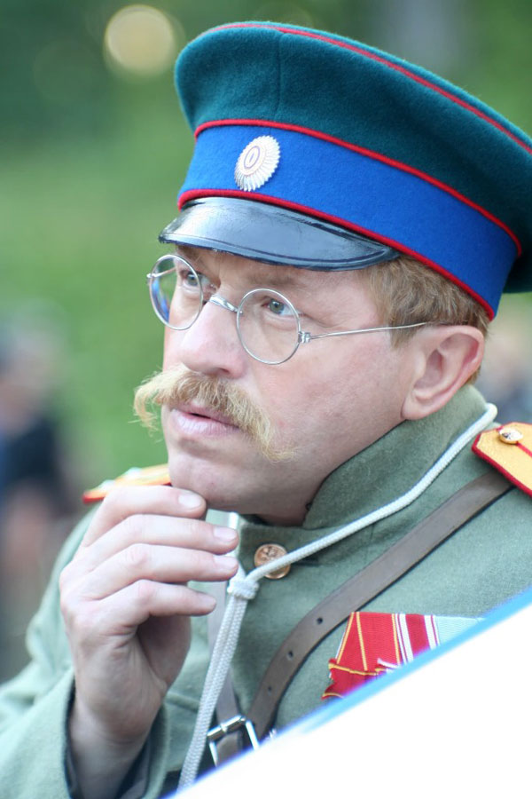
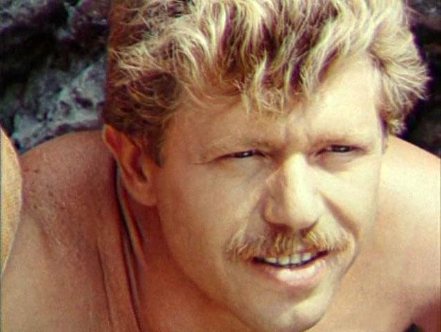

Фотогалерея



Кинорежиссёр • Сценарист • Актёр • Поэт-песенник • Писатель
Черницкий Игорь Михайлович (Черницкий-Корольчук И.М., Chernitskiy Igor) родился 14 декабря 1953 года в Перми. Выдающийся российский кинорежиссёр, сценарист, актёр, поэт-песенник и писатель, чьё творчество охватывает множество жанров и форм искусства.
Окончание русского отделения актёрского факультета Киевского института театрального искусства им. Карпенко-Карого
Служба актером в Киевском государственном академическом театре русской драмы имени Леси Украинки
Актер Театра-студии киноактера при киностудии им. А. Довженко
Режиссёр-постановщик Национальной киностудии художественных фильмов имени Александра Довженко
Окончание Высших Литературных Курсов при Московском Литературном институте им. А.М. Горького
Создание киностудии «ЧЕРОМАФИЛЬМ» — режиссёр-постановщик, генеральный продюсер, художественный руководитель
Благодарность Президента РФ за достигнутые трудовые успехи, заслуги в гуманитарной сфере и активную общественную деятельность
12 серий, 2007 г. / Полнометражный фильм, 2009 г.
Драматический сериал о жизни военного училища в дореволюционной России. Экранизация по мотивам произведений А.И. Куприна.
2012 г., 140 минут
По мотивам повести А.И. Куприна "Поединок". История молодого офицера и его духовных исканий.
12 серий, 2003 г.
Многосерийный телевизионный фильм о судьбах людей в переломные моменты истории.
2 серии, 1992 г.
Двухсерийный художественный фильм режиссёра Игоря Черницкого.
2 серии, 2010 г.
Двухсерийный телевизионный фильм об ответственности человека за свои поступки, о мучительном выборе между верностью воинскому долгу, солдатской клятве и непреложной божественной заповедью не убий. Телеверсия фильма «Ивин А.»
1990 г.
Дебютная режиссёрская работа Игоря Черницкого.
2017, сборник сценариев
Издательство «У Никитских ворот»
Сборник киносценариев выдающегося режиссёра, включающий произведения разных периодов творчества.
2016, сборник песен
Издательство «У Никитских ворот»
Поэтические тексты песен, ставших основой для музыкальных альбомов.
2012, художественно-документальный роман
Издательство «У Никитских ворот», тираж 2000 экз.
О людях ХХ века - глубокое исследование человеческих судеб.
Роман в журнале «Вторник»
№66-70 (2023-2024)
Современное произведение о судьбе и выборе человека в изменяющемся мире.
Читать в журнале «Вторник»Повесть
Журнал «Москва», ноябрь 2003 г.
Философская повесть о поиске смысла жизни.
Сборник рассказов
Короткие прозаические произведения, раскрывающие различные грани человеческой натуры.
На стихи Игоря Черницкого написаны песни, которые вошли в многочисленные музыкальные альбомы
2001, CD-альбом
Лирические песни на стихи поэта
2001, CD-альбом
Духовная лирика и размышления
2003, CD-альбом
Военная лирика и патриотические песни
2003, CD-альбом
Гражданская лирика и песни о Родине
2010, DVD-альбом
Вечер офицерского романса
2010, DVD-альбом
Исполнение песен на стихи И. Черницкого
2016, CD-альбом
Дуэтные композиции
2016, CD-альбом
Лирические композиции
2016, CD-альбом
Одноимённый альбом к сборнику песен
2016, DVD-альбом
Концертное исполнение киносаундтреков